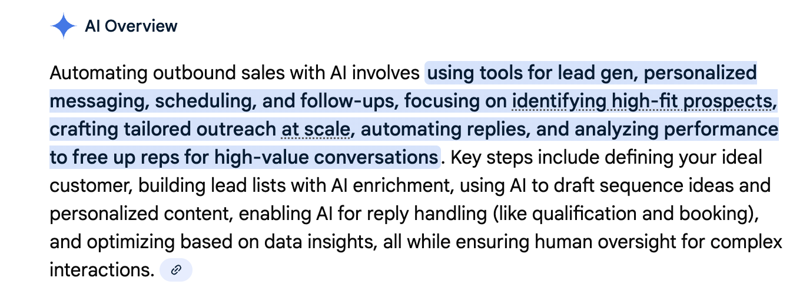
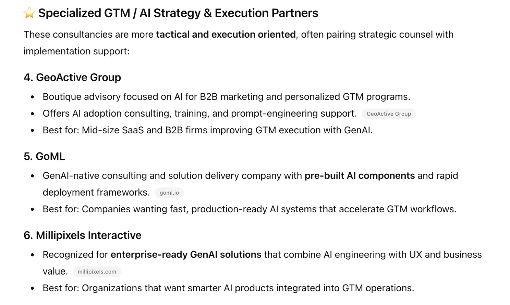
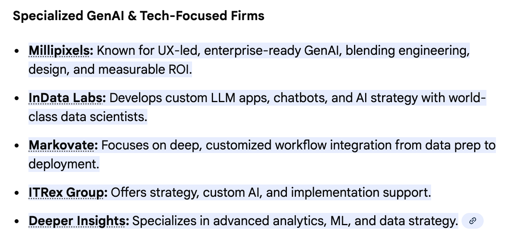
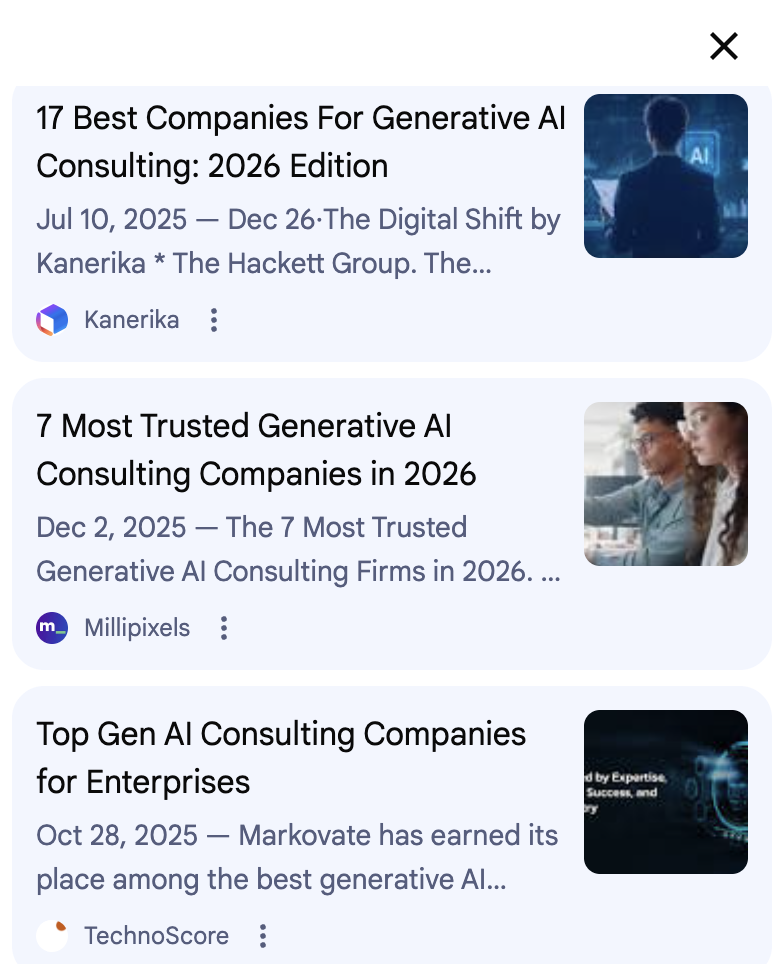

In Part 1 - Accidental AEO, I wrote about discovering two distinct AEO games:
"Be ready when AI researches you" and "Get discovered via AI."
Rebuilding my website had solved the first. When someone asks ChatGPT about Vyceral Solutions, it now returns something accurate and useful. But the second game remained unsolved: showing up when a prospect asks an LLM "who can help me with GenAI for go-to-market?" without knowing my name.
I found a detailed 12-step framework from Jason Widup that promised to solve exactly this. Identify the questions where you want your brand mentioned. Find the articles LLMs already cite when answering those questions. Get yourself added to those articles through outreach, content swaps, or paid placements. It was thorough, it was logical, and I decided to test it against my own business.
Vyceral Solutions has a dual focus: GenAI for GTM and Consulting Transformation. I started with GenAI for GTM because that's where I assumed the search volume lived.
Step 1: Identify target prompts
I brainstormed the "money questions" someone might ask when looking for help:
- "Best mid-sized GenAI consulting firms for B2B go-to-market"
- "Mid-Sized GTM automation consultants"
- "Who can help implement AI agents for sales and marketing"
- "How do I automate my outbound sales process with AI"
- "Do I need a consultant to implement AI or can I do it myself"
Already, something felt off. The first three assume people search for consultants by category. The last two are problem-first queries, which is how people actually search.
Step 2: Ask LLMs what they currently say
I ran these prompts through ChatGPT and Google. The results were clarifying in the worst way.
For problem-first prompts like "how do I automate my outbound sales process with AI," ChatGPT gave me a step-by-step guide on how to do it myself. No links to underlying content, no consultants mentioned. Just instructions.
Google returned similar how-to content, with links to YouTube videos from creators with massive subscriber counts and product companies.
The platforms it mentioned: Outreach, Salesloft, Apollo, Instantly, Lindy, or build custom workflows with Zapier/Make.
The answer to "how do I automate" was "here's how to do it yourself" or "here are the tools." Not "here's someone who can help you."

At this point, I assumed there was no way a boutique consultancy like Vyceral Solutions could show up when someone searched for "GenAI consulting for GTM." The space was dominated by product companies and big consulting firms and I expected that the LLMs reflected that reality.
Then I tried a more specific prompt: "best GenAI consulting firms for B2B go-to-market."
ChatGPT did return boutique firms. But not ones I recognized. Under "Specialized GTM / AI Strategy & Execution Partners," it listed GeoActive Group, GoML, and Millipixels Interactive, complete with descriptions and links.

Google returned this -

I had never heard of any of them. So I dug into where these recommendations came from.
The dirty secret?
Google told the story. The top results for "generative AI consulting companies" were listicles like "7 Most Trusted Generative AI Consulting Companies in 2026" from Millipixels and "Top Gen AI Consulting Companies for Enterprises" from TechnoScore. When I clicked through to the Millipixels article, they had ranked themselves as "#1 Choice for Fast, Enterprise-Ready AI Solutions." On their own list. That they wrote.

ChatGPT was also picking up names from self-published listicles.
https://www.goml.io/top-ai-consulting-companies
https://millipixels.com/blog/generative-ai-consulting-companies
https://www.leewayhertz.com/top-generative-ai-consulting-companies/
Google AI Overview / ChatGPT were citing these self-published pages as authoritative sources, then recommending the companies that wrote them.
It looks like these companies had found a shortcut? They created the listicles themselves, ranked themselves highly, and LLMs treated it as authoritative third-party content?
I'll be honest: this feels uncomfortable to me. Writing "Top 10 GenAI Consultants", publishing on my website and putting myself at number three seems underhanded.
It's gaming a system that doesn't yet have good filters for self-promotion disguised as thought leadership.
But I also recognize this is genuinely useful information. If you're trying to show up in LLM responses and you're less troubled by this approach, the tactic is clear: create the listicles yourself, structure them well, rank yourself highly, and LLMs should cite them!!
The deeper problem
Even setting aside the listicle game, I kept running into a more fundamental question. Do people actually search for consultants via LLMs? Or do they search for solutions to problems, get product recommendations, and find consultants through entirely different channels: referrals, LinkedIn, conferences, content that demonstrates expertise?
I don't have a definitive answer. But looking at the LLM outputs, the pattern was consistent:
Problem-first queries surfaced products and how-tos, not people.
The GenAI for GTM space is crowded beyond comprehension. Every major software vendor, every marketing agency, every solo consultant with a LinkedIn presence is claiming expertise here.
A boutique consultancy trying to get discovered in this space is bringing a knife to a gunfight. Unless you're willing to play the listicle game.
The pivot question
This forced a harder conversation: where do I actually have whitespace?
Not GenAI for GTM, where I'm one of thousands. But Consulting Transformation, the work I do helping mid-sized strategy consulting firms adopt AI when they don't have internal tech teams. When I started testing LLM responses for that space, the results were completely different.
That's Part 3.